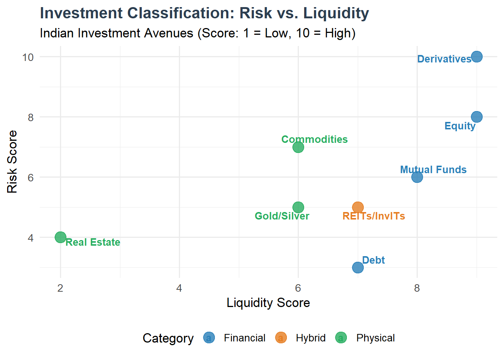
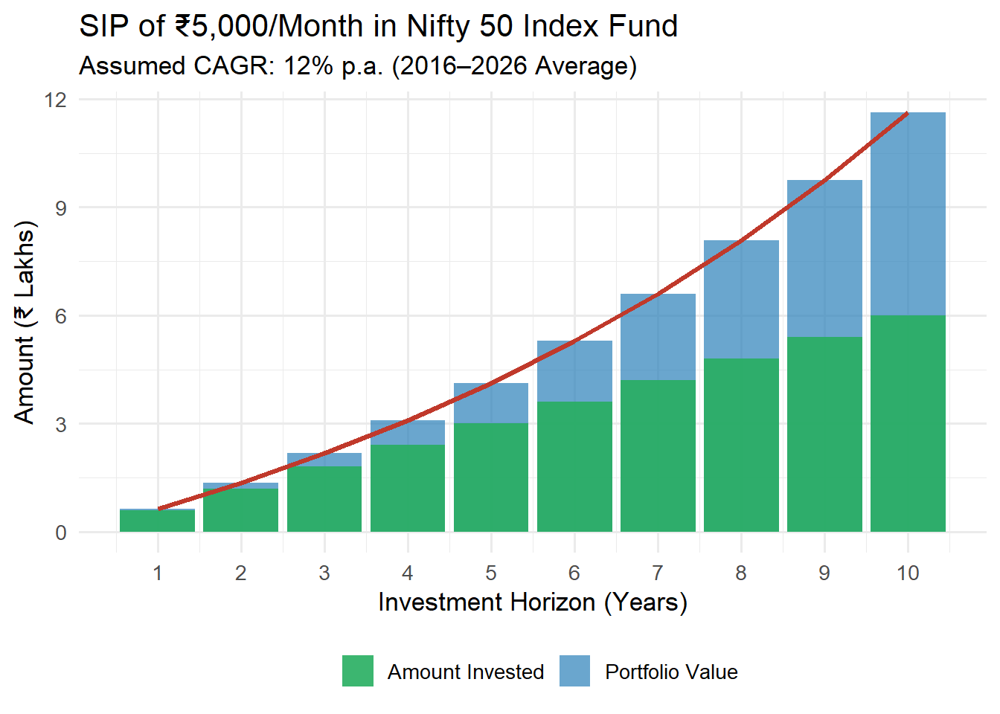
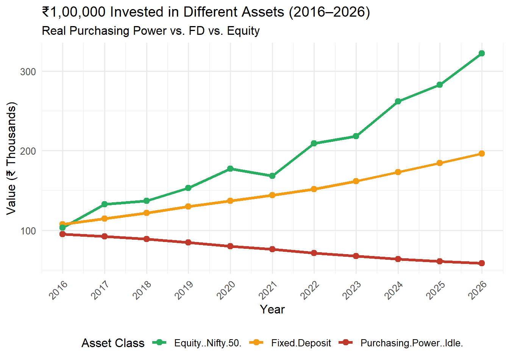
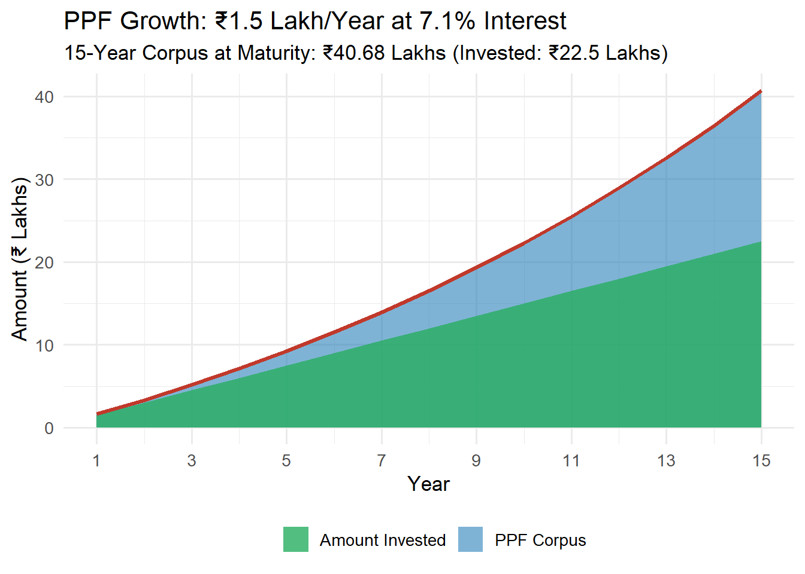
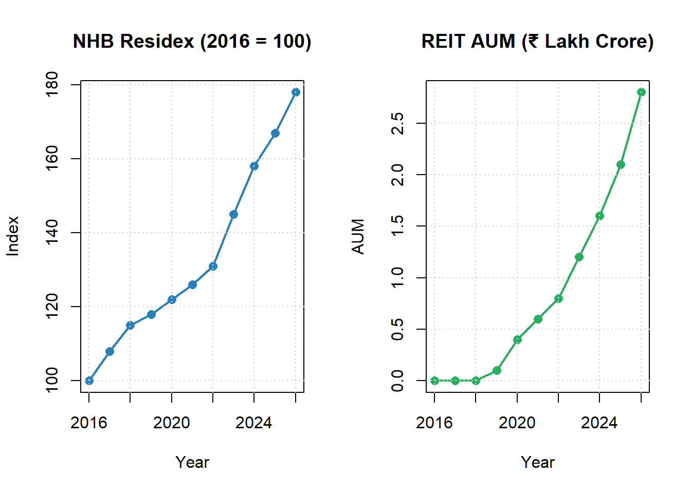
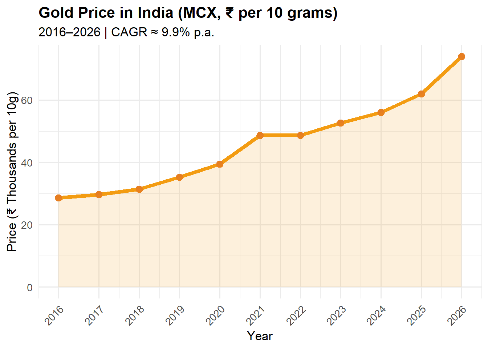

PORTFOLIO MANAGEMENT
2026-07-17
Chapter 1 Fundamentals of Investment
Learning Objectives
After completing this unit, students will be able to:
- Define investment and distinguish it from speculation and gambling
- Classify investment avenues into financial, physical, and hybrid categories
- Explain the need for investment in the context of wealth creation, inflation, and retirement
- Evaluate major investment avenues available to Indian investors
- Analyse tax implications of different investment instruments under Indian law
- Connect Kautilya’s Arthashastra principles to modern portfolio thinking
1.1 Investment — Meaning, Nature, and Characteristics
1.1.1 Meaning of Investment
Investment is the commitment of funds — present and certain — to receive future returns that are expected and uncertain. The fundamental trade-off in every investment decision is between current consumption and future wealth creation. An investor sacrifices liquidity and certainty today in the hope of earning a return that compensates for:
- The time value of money (waiting)
- Expected inflation (purchasing power risk)
- Risk of default or capital loss (uncertainty)
Formally, investment may be defined as:
“The sacrifice of certain present value for the uncertain future value” — Sharpe, Alexander & Bailey (2020)
In the Indian regulatory context, the Securities and Exchange Board of India (SEBI) defines investment as the purchase of financial assets with the expectation of income or capital appreciation over time.
1.1.2 Investment vs. Speculation vs. Gambling
| Dimension | Investment | Speculation | Gambling |
|---|---|---|---|
| Time Horizon | Long-term (1+ years) | Short-term (days–months) | Immediate |
| Risk Level | Moderate | High | Extremely High |
| Basis of Decision | Fundamental analysis, research | Market trends, tips, momentum | Chance, luck |
| Expected Return | Reasonable, commensurate with risk | High, risk-adjusted | Unpredictable |
| Leverage Used | Rarely | Often | Always |
| Regulatory Framework | SEBI, AMFI, RBI | SEBI (F&O segment) | Unregulated / illegal |
| Capital Protection | Primary objective | Secondary concern | No concern |
Source: Compiled based on SEBI guidelines and standard finance literature.
1.1.3 Characteristics of Investment
Every sound investment exhibits the following essential characteristics:
1. Return: All investments are made with the expectation of earning a return. Return may take the form of: - Dividend (equity shares) - Interest (bonds, FDs, PPF) - Capital Gain (real estate, equity) - Rent (property) - NAV Appreciation (mutual funds)
2. Risk: No investment is risk-free (even government securities carry inflation risk). The fundamental principle of finance states: \[\text{Higher Expected Return} \Rightarrow \text{Higher Risk}\]
3. Liquidity: The ease with which an investment can be converted to cash without significant loss of value. Listed equity shares are highly liquid; real estate and PPF are illiquid.
4. Safety: The probability that the invested capital will be returned to the investor. Government securities score highest on safety.
5. Tax Efficiency: The ability of an investment to minimise tax liability. Instruments like ELSS, PPF, NPS, and life insurance offer tax benefits under the Income Tax Act, 1961.
6. Marketability: Whether the investment can be easily bought and sold in secondary markets. NSE and BSE provide marketability to listed securities.
1.2 Classification of Investments
Investments are broadly classified into three major categories:
1.2.1 Financial Investments
Financial investments involve the purchase of paper assets or electronic claims. These are instruments issued by corporations, governments, or financial intermediaries.
A. Equity Instruments - Equity shares (NSE/BSE listed) - Preference shares - Units of equity mutual funds - ETFs tracking equity indices (Nifty 50 ETF, Sensex ETF)
B. Debt Instruments - Government securities (G-Secs, T-Bills) - Corporate bonds and debentures - Bank fixed deposits - Post Office savings schemes - Public Provident Fund (PPF) - National Savings Certificate (NSC)
C. Derivative Instruments - Futures contracts (NSE F&O segment) - Options contracts - Currency derivatives - Interest rate futures
D. Collective Investment Vehicles - Mutual Funds (debt, equity, hybrid) - Exchange Traded Funds (ETFs) - Real Estate Investment Trusts (REITs) - Infrastructure Investment Trusts (InvITs)
1.2.2 Physical / Real Investments
Physical investments involve the purchase of tangible assets with intrinsic value.
- Real Estate — residential, commercial, industrial properties
- Gold and Silver — bullion, jewellery, Sovereign Gold Bonds
- Commodities — agricultural produce, metals, energy
- Art and Collectibles — paintings, antiques, numismatics
- Plant and Machinery — productive assets for businesses
1.2.3 Hybrid Investments
Hybrid investments combine features of both financial and physical assets.
- Real Estate Investment Trusts (REITs) — securitised real estate
- Sovereign Gold Bonds (SGBs) — gold exposure through bonds
- Multi-Asset Mutual Funds — equity + debt + gold
- Insurance-linked Investment Plans — ULIPs

1.3 Need for Investment
1.3.1 Wealth Creation
The primary motivation for investment is the compounding of wealth over time. The power of compounding — earning returns on previous returns — transforms modest savings into substantial wealth.
Example: The Power of Compounding (SIP in Nifty 50 Index Fund)

Figure 1.1: : SIP Growth in Nifty 50 Index Fund (2016-2026)
Source: Compiled from AMFI and NSE data. Assumed CAGR of 12% based on Nifty 50 historical average (2016–2026).
At 10 years, a monthly SIP of ₹5,000 would grow the invested corpus of ₹6 lakhs to approximately ₹11.5 lakhs, representing a wealth gain of ₹5.5 lakhs — nearly doubling the capital without any active trading.
1.3.2 Inflation Protection
India has historically experienced inflation between 4–7% annually. Idle money in a savings account earning 3–4% interest effectively loses purchasing power every year.

Figure 1.2: : Purchasing Power Erosion Due to Inflation (2016–2026)
Source: Compiled from RBI, SEBI, NSE, BSE, AMFI and Government Reports (Latest Available Data).
1.3.3 Retirement Planning
India’s demographic structure is shifting. The working-age population (15–64 years) will peak around 2040, after which the dependency ratio will rise. Without investment discipline during the earning years, retirement security is impossible.
Key retirement investment vehicles in India:
| Scheme | Managed By | Return Type | Tax Benefit |
|---|---|---|---|
| EPF | EPFO | Fixed (8.25% p.a. 2024) | Section 80C |
| PPF | Post Office / Banks | Fixed (7.1% p.a.) | Section 80C + EEE |
| NPS | PFRDA | Market-linked | Section 80CCD(1B) |
| SCSS | Post Office | Fixed (8.2% p.a.) | Senior citizens |
| Mutual Fund (ELSS) | AMCs | Market-linked | Section 80C |
Source: Compiled from RBI, SEBI, NSE, BSE, AMFI and Government Reports (Latest Available Data).
1.3.4 Tax Planning
Strategic investment allows investors to reduce taxable income and defer tax liability. Under the Income Tax Act, 1961:
- Section 80C (₹1.5 lakh limit): PPF, ELSS, NSC, Life Insurance premium, EPF, home loan principal
- Section 80CCD(1B): Additional ₹50,000 for NPS
- Section 80D: Health insurance premium
- Section 10(38): LTCG exemption structure (modified post-2018 budget)
- Section 54/54EC: Capital gain exemption on property sale
1.4 Investment Avenues
1.4.1 Government Securities (G-Secs and T-Bills)
Meaning: Government Securities are debt instruments issued by the Reserve Bank of India (RBI) on behalf of the Central and State Governments to fund their fiscal deficits. They are considered the safest investment in the Indian financial system.
Types of Government Securities:
| Instrument | Maturity | Current Yield (2024) | Issuer |
|---|---|---|---|
| Treasury Bills (91-day) | 91 days | ~6.8% | Central Govt. |
| Treasury Bills (182-day) | 182 days | ~6.9% | Central Govt. |
| Treasury Bills (364-day) | 364 days | ~7.0% | Central Govt. |
| Dated G-Secs | 2–40 years | 7.0–7.5% | Central Govt. |
| State Development Loans (SDLs) | 10 years | ~7.5–7.8% | State Govts. |
| Sovereign Gold Bonds | 8 years | 2.5% + gold return | Central Govt. |
| Inflation Indexed Bonds | Variable | CPI + spread | Central Govt. |
Source: Compiled from RBI, SEBI, NSE, BSE, AMFI and Government Reports (Latest Available Data).
Features: - Zero default risk (backed by sovereign guarantee) - Tradeable on NSE’s debt segment and RBI Retail Direct platform - Interest income fully taxable - Minimum investment: ₹10,000 (retail); ₹2 crore (institutional)
RBI Retail Direct (Launched 2021): A landmark initiative that allows retail investors to directly purchase G-Secs online without intermediaries, democratising access to the safest investment class in India.
Advantages: 1. Sovereign guarantee — zero credit risk 2. Regular interest income (semi-annual coupon) 3. High liquidity through secondary markets 4. Benchmark for all other interest rate instruments
Disadvantages: 1. Returns lower than corporate bonds or equity 2. Interest rate risk — prices fall when interest rates rise 3. Reinvestment risk for long-term bonds 4. Inflation risk if yields are below inflation
1.4.2 Insurance Policies as Investment Instruments
Life insurance in India has evolved from pure risk protection to encompass investment-linked products. The Insurance Regulatory and Development Authority of India (IRDAI) oversees all insurance products.
Investment-Oriented Insurance Products:
A. Unit Linked Insurance Plans (ULIPs) - Premiums split between insurance cover and investment in funds (equity/debt/hybrid) - Lock-in period: 5 years - Returns: Market-linked - Tax benefit: Section 80C (premium), Section 10(10D) (maturity) - Regulator: IRDAI
B. Endowment Policies - Combination of term insurance + savings - Returns: Guaranteed + bonus - Maturity benefit: Sum assured + accumulated bonus
C. Money Back Policies - Periodic survival benefits during policy term - Useful for individuals needing liquidity at intervals
D. Traditional Pension Plans - Regular income post-retirement - Annuity structure
| Product | Risk | Return | Lock-in | Tax Section | Best For |
|---|---|---|---|---|---|
| Term Insurance | Zero | No return | Till maturity | 80C + 10(10D) | Pure protection |
| ULIP | Market Risk | 8-12% (market) | 5 years | 80C + 10(10D) | Growth + protection |
| Endowment | Low | 4-6% | Till maturity | 80C + 10(10D) | Savings |
| Money Back | Low | 4-5% | Till maturity | 80C + 10(10D) | Periodic needs |
| SCSS | Zero | 8.2% | 5 years | 80TTB | Senior citizens |
Comparison of Insurance-Linked Investment Products
Source: Compiled from RBI, SEBI, NSE, BSE, AMFI and Government Reports (Latest Available Data).
1.4.3 Bank Deposits
Bank deposits are the most popular savings instrument among Indian households due to their safety, simplicity, and accessibility.
Types of Bank Deposits:
A. Fixed Deposits (FDs) - Fixed interest rate for a predetermined tenure (7 days to 10 years) - Interest rates (2024): 6.5%–8.5% p.a. (varies by bank and tenure) - Premature withdrawal penalty: 0.5%–1% - TDS applicable above ₹40,000 interest per year (₹50,000 for senior citizens) - Deposit insurance: Up to ₹5 lakh per depositor per bank (DICGC)
B. Recurring Deposits (RDs) - Fixed monthly contribution over agreed tenure - Ideal for regular savers
C. Savings Bank Account - Liquid, low returns (2.5%–4% p.a.) - Section 80TTA: Interest up to ₹10,000 tax-exempt
| Bank | 1-Year FD Rate | 3-Year FD Rate | Senior Citizen Add-on |
|---|---|---|---|
| SBI | 6.80% | 7.00% | +0.50% |
| HDFC Bank | 7.10% | 7.25% | +0.50% |
| ICICI Bank | 7.10% | 7.00% | +0.25% |
| Axis Bank | 7.10% | 7.10% | +0.25% |
| Kotak Mahindra | 7.25% | 7.25% | +0.50% |
| IndusInd Bank | 7.75% | 7.25% | +0.50% |
| Yes Bank | 7.75% | 7.50% | +0.50% |
| Small Finance Banks | Up to 9.00% | Up to 9.00% | +0.50% |
Fixed Deposit Interest Rates (Select Banks, 2024)“
Source: Compiled from RBI, SEBI, NSE, BSE, AMFI and Government Reports (Latest Available Data).
1.4.4 Provident Fund Schemes
A. Employees’ Provident Fund (EPF) - Mandatory for employees earning up to ₹15,000/month in establishments with 20+ employees - Contribution: 12% of basic salary + DA (employee) + 12% (employer — split between EPF, EPS, EDLI) - Interest rate: 8.25% p.a. (2023–24) - Tax: EEE status — Exempt at contribution, accumulation, and withdrawal stages
B. Public Provident Fund (PPF) - Open to all Indian citizens (salaried or self-employed) - Annual investment: ₹500 to ₹1,50,000 - Tenure: 15 years (extendable in 5-year blocks) - Interest rate: 7.1% p.a. (Q1 2024–25, compounded annually) - Tax: EEE status — most tax-efficient long-term investment

Figure 1.3: : PPF Corpus Growth (Annual Investment ₹1.5 Lakh at 7.1%)
Source: Compiled from RBI, SEBI, NSE, BSE, AMFI and Government Reports (Latest Available Data).
C. Voluntary Provident Fund (VPF) - Extension of EPF with voluntary contributions above the mandatory 12% - Same interest rate as EPF (8.25%) - Excellent vehicle for tax-efficient retirement savings
1.4.5 Post Office Schemes
India Post, backed by the Government of India, offers a wide range of savings and investment schemes accessible to every Indian citizen, including those in rural and semi-urban areas.
| Scheme | Interest Rate | Min Investment | Tenure | Tax Benefit |
|---|---|---|---|---|
| Post Office Savings Account | 4.0% | ₹500 | No fixed tenure | 80TTA |
| 5-Year Recurring Deposit | 6.7% | ₹100/month | 5 Years | No |
| Post Office Time Deposit (1Y) | 6.9% | ₹1,000 | 1 Year | No |
| Post Office Time Deposit (5Y) | 7.5% | ₹1,000 | 5 Years | 80C |
| Monthly Income Scheme (MIS) | 7.4% | ₹1,000 | 5 Years | No |
| Senior Citizens Savings Scheme (SCSS) | 8.2% | ₹1,000 | 5 Years | 80C |
| National Savings Certificate (NSC) | 7.7% | ₹1,000 | 5 Years | 80C |
| Kisan Vikas Patra (KVP) | 7.5% | ₹1,000 | ~115 months | No |
| Sukanya Samriddhi Yojana (SSY) | 8.2% | ₹250 | 21 years / girl 18 | 80C + EEE |
| Public Provident Fund (PPF) | 7.1% | ₹500 | 15 Years | 80C + EEE |
Post Office Investment Schemes (Rates as of Q2 2024–25)
Source: Compiled from RBI, SEBI, NSE, BSE, AMFI and Government Reports (Latest Available Data).
Sukanya Samriddhi Yojana (SSY) — A flagship scheme under Beti Bachao Beti Padhao, offering the highest risk-free return at 8.2% p.a. (2024–25). Eligible for girls below 10 years of age; matures when the girl turns 21. Tax: EEE status.
1.4.6 Real Estate Investment
Real estate has been the most preferred physical asset class among Indian households for generations, driven by cultural affinity, wealth preservation, and rental income.
Forms of Real Estate Investment:
| Type | Characteristics | Entry Ticket | Liquidity |
|---|---|---|---|
| Residential Property | Rental income + appreciation | ₹20 L–₹5 Cr+ | Very Low |
| Commercial Property | Higher rental yield (5–9%) | ₹50 L–₹20 Cr+ | Low |
| Agricultural Land | Capital appreciation, restrictions | Varies | Very Low |
| REITs (listed) | Listed trust owning commercial properties | ₹10,000–₹15,000 | High |
| Real Estate Funds | Mutual fund investing in real estate stocks | ₹500 SIP | High |
Source: Compiled from RBI, SEBI, NSE, BSE, AMFI and Government Reports (Latest Available Data).
Indian Real Estate Market Trends (2016–2026):

Figure 1.4: : Indian Real Estate Price Index and REIT Growth (2016–2026)
Source: Compiled from RBI, SEBI, NSE, BSE, AMFI and Government Reports (Latest Available Data).
Tax Implications for Real Estate: - Short-term capital gain (holding < 24 months): Added to income, taxed at slab rate - Long-term capital gain (holding > 24 months): 20% with indexation benefit - Section 54: Reinvestment exemption on residential property sale - Section 54EC: Reinvestment in NHAI/REC bonds (up to ₹50 lakh)
1.4.7 Gold as an Investment
Gold occupies a unique position in Indian investment culture — it is simultaneously a store of value, inflation hedge, cultural asset, and crisis commodity. India is the world’s second-largest gold consumer.
Forms of Gold Investment in India:
| Form | Returns | Holding_Cost | Tax | Liquidity |
|---|---|---|---|---|
| Physical Gold (Jewellery) | Capital appreciation (−making charges) | Making charges 10–20% | STCG / LTCG 20%+indexation | Low |
| Gold Coins/Bars | Capital appreciation | 1–3% premium | Same | Moderate |
| Gold ETFs | Tracks gold price (MCX/LBMA) | 0.5–1% expense ratio | Same | High (exchange) |
| Sovereign Gold Bonds (SGBs) | Gold return + 2.5% p.a. interest | Nil (government) | Tax-free if held to maturity | Low (lock-in 5 yrs, maturity 8 yrs) |
| Gold Mutual Funds | Tracks gold via ETF | 0.2–0.5% extra | Same as ETF | High |
| Digital Gold | Tracks gold price | 0.5–1% | Same | High |
Gold Investment Options in India (2024)
Source: Compiled from RBI, SEBI, NSE, BSE, AMFI and Government Reports (Latest Available Data).
Sovereign Gold Bonds (SGBs): Introduced by RBI in 2015, SGBs are the most investor-friendly gold investment: - Issued by RBI in tranches - Denomination: 1 gram of gold (minimum) to 4 kg (individual) - Interest: 2.5% p.a. on issue price, paid semi-annually - Maturity: 8 years (exit possible after 5th year) - Tax advantage: LTCG on maturity is completely exempt from tax

Figure 1.5: : Gold Price Trend in India (2016–2026)
Source: Compiled from RBI, SEBI, NSE, BSE, AMFI and Government Reports (Latest Available Data).
1.4.8 Silver as an Investment
Silver occupies a dual role in India — as a precious metal and an industrial commodity. Its price is more volatile than gold due to smaller market size and higher industrial demand (electronics, solar panels, EV batteries).
Silver Investment Options: - Physical silver (bars, coins, utensils) - Silver ETFs (launched in India in 2022 — Nippon India Silver ETF, ICICI Prudential Silver ETF) - Multi-commodity funds - MCX silver futures
Silver vs Gold (2016–2026):
| Year | Gold Return (%) | Silver Return (%) |
|---|---|---|
| 2016 | 5.5 | -2.0 |
| 2017 | 3.6 | 4.5 |
| 2018 | 6.0 | 8.0 |
| 2019 | 12.0 | 15.0 |
| 2020 | 12.0 | 18.0 |
| 2021 | 23.2 | 47.0 |
| 2022 | 0.1 | -12.0 |
| 2023 | 8.1 | 10.0 |
| 2024 | 6.3 | -5.0 |
| 2025 | 10.7 | 8.0 |
| 2026 | 19.4 | 35.0 |
Annual Returns — Gold vs. Silver in India (%)
Source: Compiled from RBI, SEBI, NSE, BSE, AMFI and Government Reports (Latest Available Data).
1.5 Core Investment Lessons in Arthashastra
1.5.1 Introduction to Kautilya’s Economic Thought
The Arthashastra, authored by Acharya Kautilya (also known as Chanakya or Vishnugupta) around 300 BCE, is one of the earliest and most comprehensive treatises on statecraft, economics, and public administration. Comprising 15 books (adhikaranas) and 150 chapters, it covers topics ranging from treasury management to risk diversification that are strikingly relevant to modern finance.
“A wise king should seek the welfare of his subjects through prosperity.” — Kautilya, Arthashastra, Book I
1.5.2 Kautilya’s Wealth Principles and Modern Investment
Principle 1: Artha (Wealth) is the Foundation
Kautilya held that Artha — material wealth and economic prosperity — is the very foundation of Dharma (righteousness) and Kama (enjoyment). Without economic security, social and moral progress is impossible. Modern finance echoes this: financial freedom enables life choices.
Modern Parallel: Emergency Fund → Financial Freedom → Life Goals
Principle 2: Kosha (Treasury) — Capital Preservation First
Kautilya devoted extensive attention to the Kosha (state treasury). He argued that the king must first secure existing wealth before attempting expansion. The treasury is the source of all power.
Modern Parallel: Capital Preservation as the first principle in risk management — “First, do not lose money” (Warren Buffett’s Rule #1)
Principle 3: Diversification of Revenue Sources
Kautilya prescribed that the state derive revenues from multiple sources — agriculture, trade, mines, forests, and taxes — so that no single source failure would endanger the treasury.
Modern Parallel: Portfolio Diversification — MPT’s core insight that combining uncorrelated assets reduces total risk
Principle 4: Risk Assessment Before Action (Upaaya)
Every major financial or military action was to be preceded by rigorous risk assessment. Kautilya identified four upayas (strategies): Sama (conciliation), Dana (gift/incentive), Bheda (division), and Danda (force). Each involved evaluating cost-benefit tradeoffs.
Modern Parallel: Risk-Return Analysis before every investment decision
Principle 5: Information Advantage (Intelligence)
Kautilya placed extraordinary emphasis on intelligence gathering as the foundation of sound decision-making. The king was never to act on incomplete information.
Modern Parallel: Fundamental Analysis, Due Diligence, Research — SEBI mandates disclosure requirements to ensure informed investment
Principle 6: Long-Term Thinking (Yugas)
Kautilya described governance and wealth management in terms of long cycles (yugas), emphasising that short-term sacrifices yield long-term prosperity.
Modern Parallel: Long-term equity investment, Rupee Cost Averaging through SIPs, Compounding over decades
1.5.3 Comparative Table: Arthashastra vs. Modern Portfolio Management
| Arthashastra Principle | Modern Equivalent | Relevance in India Today |
|---|---|---|
| Kosha Raksha (Treasury Protection) | Capital Preservation / Risk Management | SEBI’s IEPF, investor protection norms |
| Bahubali Niti (Diversification of Power) | Portfolio Diversification (MPT) | Markowitz Efficient Frontier |
| Vyavaharika Dharma (Ethical Trade) | ESG Investing / Corporate Governance | BRSR reporting, SEBI ESG framework |
| Upaaya (Strategic Risk Assessment) | Risk-Return Analysis / Scenario Planning | VaR, Stress Testing, Scenario Analysis |
| Danda (Enforcement / Stop-Loss) | Stop-Loss Orders / Risk Limits | F&O position limits, circuit breakers |
| Kshetra Vibhaga (Resource Allocation) | Asset Allocation Strategy | Strategic Asset Allocation (SAA) |
| Niti (Intelligence and Research) | Fundamental & Technical Analysis | SEBI research analyst regulations |
| Yugas (Long-term Cycles) | Long-term Investing / Compound Interest | SIP discipline, long-term wealth creation |
| Vyaya (Controlled Expenditure) | Expense Ratio Minimisation / Cost Control | Direct Mutual Fund plans, zero-commission |
| Labha (Profit Maximisation with limits) | Sharpe Ratio / Risk-Adjusted Returns | Risk-adjusted performance benchmarking |
Arthashastra Principles vs. Modern Portfolio Management
Source: Compiled by the author from Kautilya (300 BCE), Sharpe et al. (2020), and SEBI publications.
Research Corner 1.1: Behavioural Finance and Arthashastra
Recent research by Thaler and Sunstein (2008) and subsequent behavioural economists has demonstrated that investors routinely violate rational decision-making — they are loss-averse, overconfident, and herd-driven. Interestingly, Kautilya’s emphasis on intelligence, caution, and long-term thinking anticipates many of the de-biasing prescriptions of modern behavioural finance.
Research Gap: A systematic study comparing Arthashastra’s wealth management doctrines with modern portfolio theory remains underexplored in Indian finance journals. This offers fertile ground for PhD research.
Suggested Reading: - Rangarajan, L.N. (Ed.) (1992). Kautilya: The Arthashastra. Penguin Classics. - Thaler, R.H. & Sunstein, C.R. (2008). Nudge. Yale University Press.
1.6 Summary
This unit laid the conceptual foundation for the entire textbook. The key takeaways are:
Investment is a sacrifice of present certainty for future uncertain return — distinguished from speculation by its research-based, long-term orientation.
Three characteristics drive every investment decision: Return, Risk, and Liquidity — and these three are in perpetual tension.
Classification of investments into financial (equity, debt, derivatives), physical (real estate, gold), and hybrid (REITs, SGBs) helps match instruments to investor objectives.
Four primary needs drive investment: wealth creation (compounding), inflation protection (real returns), retirement planning (EPF, PPF, NPS), and tax planning (Section 80C).
Indian investment avenues span a wide spectrum — from ultra-safe G-Secs and PPF to market-linked equity and real estate — each with distinct risk, return, and tax profiles.
Gold and silver occupy unique positions as alternative assets — gold as inflation hedge, silver as both precious metal and industrial commodity.
Kautilya’s Arthashastra reveals that the principles of modern portfolio management — capital preservation, diversification, risk assessment, long-term thinking — have deep roots in Indian intellectual tradition.
1.7 Key Terms
- Investment — Commitment of funds today for uncertain future returns
- Speculation — Short-term, high-risk financial activity based on market movements
- Return — Income from investment (dividend, interest, capital gain)
- Risk — Probability that actual return will differ from expected return
- Liquidity — Ease of conversion of an asset to cash
- Safety — Protection of invested capital
- Government Securities (G-Secs) — Sovereign debt instruments issued by RBI
- Treasury Bills — Short-term government securities (up to 364 days)
- Sovereign Gold Bonds (SGBs) — RBI-issued gold-backed investment bonds
- PPF (Public Provident Fund) — 15-year government-backed savings scheme
- EPF (Employees’ Provident Fund) — Mandatory retirement scheme for salaried employees
- SCSS (Senior Citizens Savings Scheme) — Post office scheme for 60+ investors
- SSY (Sukanya Samriddhi Yojana) — Savings scheme for girl child education and marriage
- ULIP (Unit Linked Insurance Plan) — Market-linked insurance product by IRDAI
- REIT (Real Estate Investment Trust) — Listed trust owning income-generating real estate
- InvIT (Infrastructure Investment Trust) — Listed trust owning infrastructure assets
- Fixed Deposit (FD) — Bank deposit at fixed rate for fixed tenure
- Tax Efficiency — Minimisation of tax liability through investment planning
- Inflation Risk — Risk of purchasing power erosion
- Capital Gain — Profit from sale of investment above purchase price
- EEE Status — Exempt-Exempt-Exempt (contribution, accumulation, withdrawal)
- Section 80C — Income tax deduction of up to ₹1.5 lakh for specific investments
- Arthashastra — Ancient Indian treatise on statecraft and economics by Kautilya
- Kosha — Treasury in Kautilya’s framework; equivalent to capital preservation
- Compounding — Earning returns on previously earned returns
- SIP (Systematic Investment Plan) — Regular, fixed-amount investment in mutual funds
- Rupee Cost Averaging — Investment discipline of buying more units when prices are low
- DICGC — Deposit Insurance and Credit Guarantee Corporation (covers ₹5 lakh per depositor)
- RBI Retail Direct — Platform for retail investors to buy G-Secs directly from RBI
- NHB Residex — National Housing Bank’s residential price index for India
1.8 Review Questions
1.8.1 Very Short Answer Questions (2 marks each)
- Define investment.
- What is the meaning of ‘EEE status’ in Indian tax context?
- Name any four post office savings schemes available in India.
- What is the current PPF interest rate (2024–25)?
- State the minimum and maximum investment limits in a Sovereign Gold Bond.
- Differentiate between investment and speculation in one line each.
- What is the DICGC insurance cover for bank depositors?
- Who regulates insurance products in India?
- Define ‘Kosha’ as described in Arthashastra.
- What is the maturity period of the Sukanya Samriddhi Yojana?
1.8.2 Short Answer Questions (5 marks each)
- Explain the key characteristics of a sound investment.
- Describe the classification of investments with examples from the Indian market.
- What is the role of government securities in an investment portfolio? Explain the RBI Retail Direct initiative.
- Compare fixed deposits offered by public sector banks vs. small finance banks. What factors should an investor consider?
- Explain the advantages of Sovereign Gold Bonds over physical gold investment.
- Discuss the tax benefits available to salaried investors under Section 80C of the Income Tax Act.
- How does the power of compounding work in a PPF account? Illustrate with a numerical example.
- Explain the need for investment in the context of inflation protection with data from the Indian economy (2016–2026).
- What are the key features of the National Pension System (NPS) managed by PFRDA?
- Describe Kautilya’s principle of Kosha Raksha and its relevance to modern risk management.
1.8.3 Essay Questions (10 marks each)
- Critically examine the various investment avenues available to an Indian retail investor. Which combination would you recommend for a 35-year-old professional with moderate risk appetite and a 20-year investment horizon? Justify your recommendation with data.
- “The primary objective of investment is wealth creation, but inflation continuously erodes its value.” Discuss this statement with reference to Indian market data from 2016 to 2026.
- Evaluate the role of Post Office Savings Schemes in promoting financial inclusion in India. How do these schemes compare with bank fixed deposits and mutual funds?
- Write a detailed note on the evolution of gold as an investment avenue in India. Include a discussion on Sovereign Gold Bonds, Gold ETFs, and digital gold platforms.
- “Kautilya’s Arthashastra is the first textbook of investment management.” Critically examine this statement, drawing parallels between Arthashastra principles and modern portfolio management theory.
- Discuss the structure, features, and investor suitability of Unit Linked Insurance Plans (ULIPs). How have IRDAI regulations improved ULIP transparency since 2010?
- Analyse the Indian real estate market as an investment avenue (2016–2026). How have REITs changed the accessibility of real estate investment for retail investors?
- Explain the EPF, VPF, and NPS as complementary retirement planning instruments. Construct a retirement corpus plan for an employee aged 30 years with basic salary of ₹50,000/month.
- Critically evaluate the risk-return tradeoff across major investment avenues in India. Use a risk-return matrix to support your analysis.
- How does the Indian government use fiscal incentives (Section 80C, 80CCD, 10(10D)) to channelise household savings into productive investment? Assess the effectiveness of these measures.
1.8.4 Analytical Questions (15 marks each)
- An investor has ₹10 lakh to invest. Construct a diversified investment portfolio using at least five different asset classes available in India. Justify each allocation, estimate the expected return, and assess the overall risk of the portfolio.
- Using the concept of purchasing power parity and inflation data from 2016–2026, demonstrate how different investment avenues have preserved or enhanced real wealth. Present your analysis in tabular and graphical form using R.
- Kautilya prescribes seven elements of a strong state (Saptanga) — territory, population, minister, treasury, fort, army, and ally. Analyse how each of these can be mapped to elements of a sound personal financial plan.
- Compare the historical returns from gold, equity (Nifty 50), real estate (NHB Residex), and debt (10-year G-Sec) in India from 2016 to 2026. Which asset class offered the best risk-adjusted return? Use Sharpe Ratio as the evaluation metric.
- An investor is planning retirement in 25 years and has ₹20,000/month available for investment. Design a phased investment strategy for ages 30–35, 35–45, 45–55, and 55–retirement, selecting appropriate instruments for each phase.
1.8.5 Case Study Questions (20 marks each)
Case Study 1: The Dilemma of Ramesh
Ramesh, a 40-year-old government schoolteacher in Coimbatore, earns ₹65,000/month. He has been keeping all his savings in a savings bank account and 2-year FDs. His financial goals are: (a) daughter’s education in 10 years — ₹25 lakh needed, (b) own house in 15 years — ₹60 lakh, (c) retirement corpus — ₹1 crore by age 60. He is risk-averse and is not familiar with stock markets. Advise Ramesh on an appropriate investment plan using only the avenues covered in this unit, with detailed calculations.
Case Study 2: Arthashastra in Action — HDFC Bank’s Treasury Management
HDFC Bank maintains one of the most efficient treasury operations among Indian private sector banks, managing over ₹6 lakh crore in assets (2024). Analyse HDFC Bank’s investment portfolio composition (G-Secs, corporate bonds, equity stakes) using publicly available annual report data. Draw parallels between HDFC Bank’s treasury management and Kautilya’s Kosha principles.
Case Study 3: Gold Investment Strategy During COVID-19
During the COVID-19 pandemic (2020–2021), gold prices in India surged from ₹40,000 to ₹56,000 per 10 grams. Simultaneously, equity markets crashed 40% in March 2020 before recovering by December 2020. Analyse the risk-hedging properties of gold in an Indian investor’s portfolio using this data. Construct a portfolio of 70% equity + 30% gold and compare its performance with a 100% equity portfolio over 2020–2022.
1.9 MCQs — Module I
1. Investment is best defined as: - (A) Gambling with surplus funds - (B) Commitment of present certain value for uncertain future return ← Correct - (C) Speculation in stock markets - (D) Depositing money in a savings account
Answer: B. Investment involves sacrificing present certain consumption for future uncertain returns with the expectation of income or capital appreciation.
2. Which of the following is NOT a characteristic of investment? - (A) Return - (B) Risk - (C) Guaranteed profit ← Correct - (D) Liquidity
Answer: C. No investment guarantees a profit. All investments involve uncertainty.
3. The Employees’ Provident Fund (EPF) carries which of the following tax status? - (A) TEE - (B) ETE - (C) EEE ← Correct - (D) TTE
Answer: C. EPF is Exempt-Exempt-Exempt — contributions are deductible (80C), accumulation is tax-free, and withdrawal after 5 years is tax-exempt.
4. The RBI Retail Direct platform was launched to: - (A) Allow retail investors to buy insurance products - (B) Enable retail investors to purchase government securities directly ← Correct - (C) Provide a platform for stock trading - (D) Facilitate NRI remittances
Answer: B. RBI Retail Direct, launched in 2021, allows retail investors to open gilt accounts and buy G-Secs directly from RBI.
5. Sovereign Gold Bonds (SGBs) offer an additional interest of: - (A) 5% per annum - (B) 3.5% per annum - (C) 2.5% per annum ← Correct - (D) 1% per annum
Answer: C. SGBs offer 2.5% p.a. interest on the issue price, paid semi-annually, in addition to gold price appreciation.
6. The minimum investment in Public Provident Fund (PPF) is: - (A) ₹1,000 per year - (B) ₹500 per year ← Correct - (C) ₹100 per year - (D) ₹250 per year
Answer: B. Minimum annual investment in PPF is ₹500 and maximum is ₹1,50,000.
7. Under the Income Tax Act, 1961, Section 80C allows a maximum deduction of: - (A) ₹1,00,000 - (B) ₹1,25,000 - (C) ₹1,50,000 ← Correct - (D) ₹2,00,000
Answer: C. Section 80C allows a maximum deduction of ₹1.5 lakh per financial year for eligible investments.
8. Which investment avenue was described by Kautilya as ‘Kosha’ in the Arthashastra? - (A) Military funds - (B) State treasury ← Correct - (C) Trade revenue - (D) Land revenue
Answer: B. Kosha refers to the treasury — the repository of the state’s wealth, considered the most critical pillar of the state.
9. The Sukanya Samriddhi Yojana (SSY) interest rate for 2024–25 is: - (A) 7.1% - (B) 7.5% - (C) 8.0% - (D) 8.2% ← Correct
Answer: D. SSY earns 8.2% p.a. as of 2024–25, making it one of the highest-yielding government schemes.
10. Gold ETFs in India are regulated by: - (A) IRDAI - (B) RBI - (C) SEBI ← Correct - (D) PFRDA
Answer: C. Gold ETFs are mutual fund products listed on stock exchanges, regulated by SEBI under the Mutual Funds Regulations.
11. Which of the following is classified as a ‘Hybrid Investment’? - (A) Treasury Bills - (B) Physical Gold - (C) Sovereign Gold Bond ← Correct - (D) Equity Shares
Answer: C. SGBs combine financial instrument features (bond) with physical asset exposure (gold), making them hybrid investments.
12. The maximum deposit covered under DICGC insurance per depositor per bank is: - (A) ₹1 lakh - (B) ₹2 lakh - (C) ₹5 lakh ← Correct - (D) ₹10 lakh
Answer: C. DICGC (Deposit Insurance and Credit Guarantee Corporation) covers deposits up to ₹5 lakh per depositor per bank.
13. Which investment avenue is most suitable for protecting against inflation? - (A) Savings Bank Account - (B) Fixed Deposit - (C) Equity Mutual Fund ← Correct - (D) Post Office Monthly Income Scheme
Answer: C. Historically, equity mutual funds have provided returns exceeding inflation over the long term, making them the most effective inflation-beating investment.
14. The Arthashastra’s principle most closely related to Modern Portfolio Theory’s diversification is: - (A) Sama (conciliation) - (B) Bahubali Niti (diversification of power) ← Correct - (C) Danda (force) - (D) Dana (gifts)
Answer: B. The Arthashastra’s concept of not concentrating power/resources in a single area closely mirrors MPT’s diversification principle.
15. Post Office Senior Citizens Savings Scheme (SCSS) interest rate (2024–25) is: - (A) 7.5% - (B) 7.9% - (C) 8.0% - (D) 8.2% ← Correct
Answer: D. SCSS offers 8.2% p.a., payable quarterly, making it attractive for senior citizen investors seeking regular income.
16. Which of the following is true about Treasury Bills (T-Bills)? - (A) They pay semi-annual coupon interest - (B) They are issued only by state governments - (C) They are issued at a discount and redeemed at face value ← Correct - (D) They have maturity of 2–40 years
Answer: C. T-Bills are zero-coupon instruments issued at discount and redeemed at par value. The difference is the investor’s return.
17. An investor who avoids equity markets due to fear of short-term losses, even if long-term returns are higher, is exhibiting: - (A) Risk tolerance - (B) Loss aversion ← Correct - (C) Rational behaviour - (D) Diversification
Answer: B. Loss aversion — a behavioural finance concept — causes investors to overweight the pain of losses relative to equivalent gains, leading to suboptimal decisions.
18. The term ‘marketability’ of an investment refers to: - (A) The return earned by the investment - (B) The tax efficiency of the instrument - (C) The ease of buying or selling the investment in secondary markets ← Correct - (D) The minimum investment required
Answer: C. Marketability refers to how easily an investment can be bought or sold in secondary markets without significant price impact.
19. National Pension System (NPS) is regulated by: - (A) RBI - (B) SEBI - (C) IRDAI - (D) PFRDA ← Correct
Answer: D. NPS is regulated by the Pension Fund Regulatory and Development Authority (PFRDA).
20. The concept of ‘Upaaya’ in Arthashastra most closely parallels which modern investment tool? - (A) Fundamental Analysis - (B) Technical Analysis - (C) Scenario Analysis / Risk Assessment ← Correct - (D) Portfolio Rebalancing
Answer: C. ‘Upaaya’ involves evaluating multiple strategic options and their trade-offs before taking action — directly analogous to scenario analysis in investment risk management.
21. Which of the following provides BOTH insurance cover AND investment returns? - (A) Term Insurance - (B) Health Insurance - (C) Unit Linked Insurance Plan (ULIP) ← Correct - (D) General Insurance
Answer: C. ULIPs combine a life insurance component with a market-linked investment component, regulated by IRDAI.
22. Real Estate Investment Trusts (REITs) were first introduced in India by: - (A) RBI - (B) Ministry of Finance - (C) SEBI ← Correct - (D) IRDAI
Answer: C. SEBI introduced REITs in India through its REIT Regulations 2014, with the first REIT (Embassy REIT) listed on NSE in April 2019.
23. The ‘EEE’ in PPF’s EEE tax status stands for: - (A) Earn-Earn-Earn - (B) Exempt-Exempt-Exempt ← Correct - (C) Equity-Equity-Equity - (D) Equal-Equal-Equal
Answer: B. EEE means the investment is Exempt at the contribution stage (80C deduction), Exempt during accumulation (tax-free interest), and Exempt at withdrawal.
24. Kisan Vikas Patra (KVP) doubles your investment in approximately: - (A) 8 years - (B) 10 years - (C) 115 months ← Correct - (D) 12 years
Answer: C. At 7.5% p.a. (2024–25), KVP doubles your investment in approximately 115 months (about 9 years 7 months).
25. Which of the following statements about Gold ETFs is INCORRECT? - (A) They are listed on stock exchanges - (B) They track the domestic gold price - (C) They are backed by physical gold held by the fund house - (D) They offer 2.5% p.a. interest in addition to gold returns ← Correct
Answer: D. The 2.5% additional interest is a feature of Sovereign Gold Bonds (SGBs), NOT Gold ETFs. Gold ETFs only provide exposure to gold price movements.
End of Module I